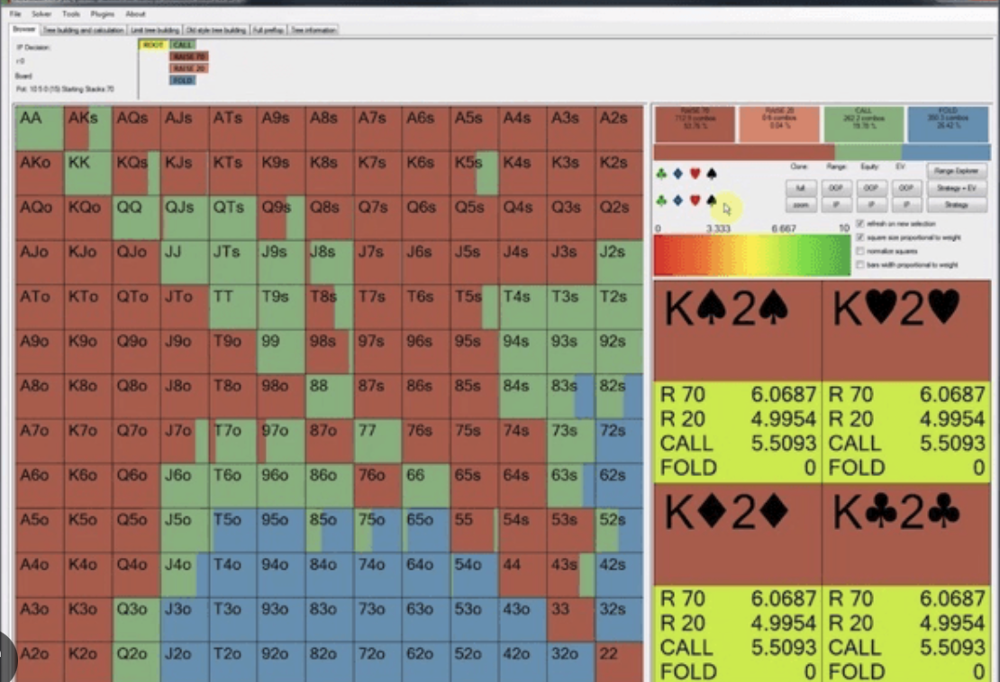

No-limit texas hold'em is one of the most popular versions of poker played around the world today. The game begins with every player being dealt two cards (unlike other popular variants where players are dealt 4 or 5 cards), and after several rounds of betting, the winner is the player who can make the best five card hand using the two cards that were dealt to them, and five cards that are "community" cards (via the flop, turn, and river). The game is highly strategic, as everyone's cards are hidden from each other. Unlike a game like chess, poker is not a game of perfect information (this is the primary source of uncertainty). With most of the cards on the table being hidden (all of the opponent cards), one must make the best decisions they can make under high degrees of uncertainty.
In my project, my goal was to build a solver (a program that understands the best decision making) for a subvariant of texas hold'em called heads-up texas hold'em, which is texas hold'em played between two players. This subvariant has a substantially different dynamic than six (most commonly played online) or nine (most commonly played in-person) player hold'em because instead of having to beat five or eight other people, you only have to beat one other person, which at the end of the day means you have to have better cards than them, or get them to fold.
So far, the majority of my research has involved looking into solving algorithms, making key problem scope reductions, and implementing some of the algorithms that I have researched. In particular, the goal of a solver is to find a strategy that achieves Nash Equilibrium, which is a fancy way to say that a player can't improve their strategy unless their opponent's strategy is also changed. This always starts from a completely random/uniform strategy (similar to some of the problems we have seen in our other projects), iterating through the game, computing how much "regret" one has, and changing one's strategy to minimize their regret. This algorithm gets repeated until the Nash Equilibrium is found -- until regret can no longer be minimized.
As I briefly mentioned before, there are "meta" decisions to be made about what kind of problem we will be using the solver to solve, given that the Poker game tree can be so big. I have made the following decisions:
I'll be assuming that stacks sizes are 100BB (100 big blinds). This is important because decisions change massively in poker depending on stack sizes because of implied odds (the idea that even if you don't have the pot odds, you may be able to get all of your opponent's stack in if you make the hand you are trying to make).
The solver will be limited to five bet size decisions. 1/4 pot, 1/2 pot, 3/4 pot, pot, and 2x pot. Some modern solvers have shown that a polarizing overbet (2x pot) strategy can be very succesful, so I want to incorporate that idea into my solver.
As far as concrete progress, I have implemented most of the structure for visualizing the solver results (see the picture below for the desired visualization), as well as implemented most of the CFR minimization (Counterfactual Regret Minimization) algorithm, which will allow my program to find solutions to the game.

The primary next step is to get the final parts of the CFR algorithm working, and working with my visualization software. While part of the goal of this project was to do research, it would also be cool if my program had practical value, so I want to make sure that the users can elegantly visualize the results.
Game state combination -- Poker is a massively complex game, and it would be incredibly difficult for a human to memorize the correct bet sizing on all hole card - board runout combinations. The goal of this would be to try to come up with a few game states that have similar solver solutions so that one could memorize those solver solutions, and use them on similar boards in practice.